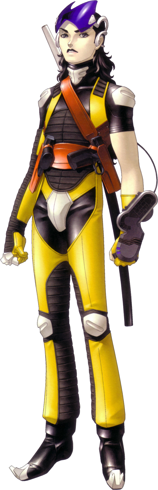
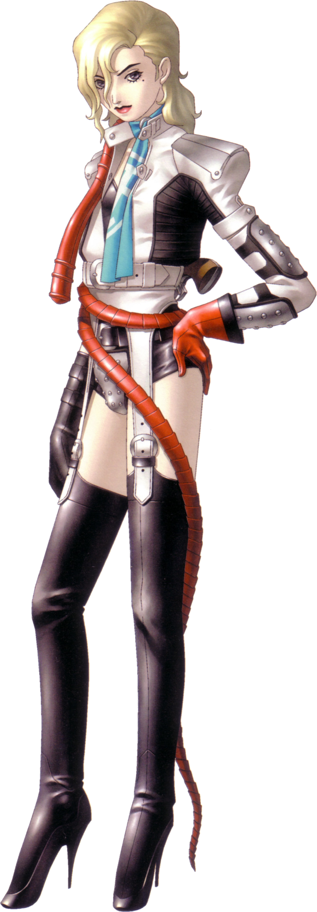
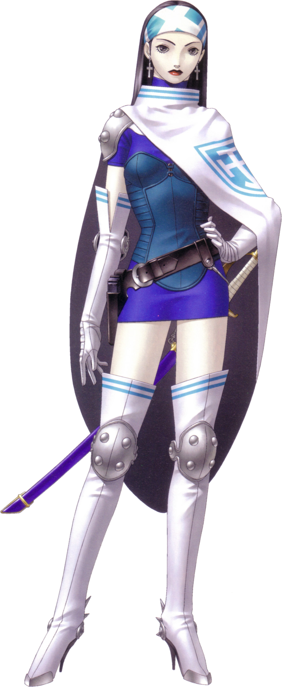
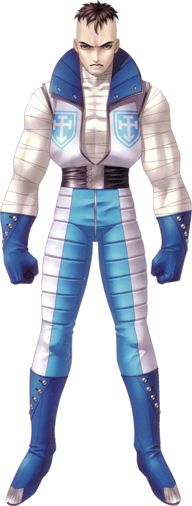
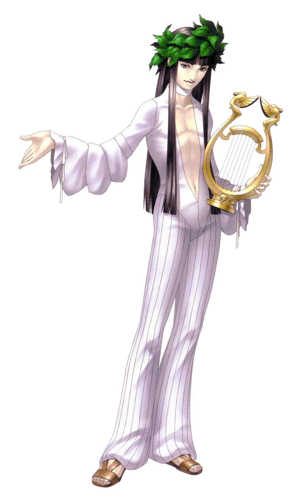

| Shin Megami Tensei II | |
|---|---|

|
|
| Nome original: | 真・女神転生II |
| Ano de lançamento: | 1994 no Japão |
| Plataforma(s): | Super Famicom, PlayStation, Game Boy Advance, Wii, PlayStation 3, PlayStation Portable, PlayStation Vita, iOS e Android |
Shin Megami Tensei II
Shin Megami Tensei II é o segundo jogo da série Shin Megami Tensei. Foi lançado para o Super Famicom em 18 de março de 1994 no Japão. Foi refeito para o PlayStation em 2002, e depois para o Game Boy Advance em 2003. É um RPG que, semelhante à maioria dos jogos da série, incentiva o jogador a persuadir os demônios a se juntarem ao grupo de batalha dos protagonistas.
Até o momento, o jogo nunca recebeu nenhuma tradução oficial da Atlus.
| Contents |
|---|
1. Plot
A seguir está uma linha do tempo introdutória ao jogo, conforme encontrada no manual original da versão Super Famicom de Shin Megami Tensei II:
199X:
'O Grande Cataclisma de Tóquio' - Thorman pressiona o botão, lançando ICBMs equipados com ogivas nucleares em Tóquio. Acontece o holocausto nuclear global.
203X:
'A Grande Inundação de Tóquio' - Após a reconstrução de Tóquio, um grande terremoto seguido de um tsunami de proporções maciças faz com que o oceano invada Tóquio e dizime toda a área ao seu redor. Mesmo depois
que as águas baixaram, os subúrbios de Tóquio permaneceram submersos.
'Estabelecimento de uma Sociedade Cooperativa Comunal' - Após a destruição da Basílica, uma sociedade e um governo livres são estabelecidos e recebem calorosamente todos, sejam eles messiânicos ou gaeanos.
204X:
'Ascensão da Igreja Messiânica' - Por meio de manobras políticas, a Igreja Messiânica assume o governo e o converte em uma teocracia.
'Revolta Gaeana' - Irritados e contra à ascensão dos Messiânicos ao poder, vários grupos de Gaeanos iniciam diversos distúrbios, mas todos são rapidamente sufocados pelos Cavaleiros do Templo.
205X:
'Conclusão do Centro' - Usando uma grande quantidade de fundos, uma enorme estrutura chamada "Centro" foi construída no antigo local da Basílica. Também é anunciado o plano de criação de um
governo municipal denominado "Millennium".
'Demonoides desenvolvidos' - A fim de garantir uma fonte de trabalho, formas de vida artificiais chamadas "Demonoides" são desenvolvidas.
206X:
'Millennium quase concluído' - Instalações projetadas para acomodar pessoas, Valhalla e a Fábrica (uma área industrial), estão projetadas e quase completas. Instalações de
entretenimento como cassinos também são construídas.
'Contaminação Ambiental' - Por causa do aquecimento global, da contaminação radioativa e da deterioração da camada de ozônio, a maior parte do mundo fora de Millennium Tóquio se tornou
inabitável. Um grande número de pessoas de todo o mundo se dirigem à Millennium, pois seu ambiente é totalmente protegido.
'Cavaleiros do Templo se tornam Forças Policias Especiais' - Depois de pôr fim a várias manifestações e revoltas de Gaeanos, os Cavaleiros do Tempo são congratulados pelo Centro e promovidos ao estatuto de
Elite. Eles são declarados a força policial oficial da cidade. Seu aumento de poder aumenta ainda mais o controle que o Centro tem sobre o resto da cidade.
20XX:
'Dia presente, tempo presente' - A megalópole que uma vez já foi chamada de Tóquio... muitos são os nomes e as formas que ela assumiu ao longo de sua longa história... e ela sobreviveu. E
mesmo hoje, ela vive... como "Millennium Tóqui"; a cidade da fé do Messias. A fé que reuniu sob suas asas os corações e mentes de milhões que clamam pelo advento do Messias.
No início, ela estava sendo construída para transformar o sonho do Reino dos Mil Anos em realidade, mas nem Deus nem o Messias apareceram.
E então, o tempo passou...
No comando de Millennium, está o órgão governante conhecido como Centro.
Sob a autoridade direta do Centro estão os Cavaleiros do Templo, um grupo militar de elite que tem a função de força policial.
A elite de Millennium são os Cidadãos de Primeira Classe, que têm o direito de viver no Centro livremente.
Existem aqueles que podem ser proprietários de um Terminal de Braço. Esses são considerados cidadãos de segunda categoria.
E por último vêm aqueles que são apenas reconhecidos como residentes de Millenium Tóquio. Esses são considerados cidadãos comuns.
Um dos bairros particularmente prósperos do Millenium é a Área de Valhalla, famosa pelo cruel esporte de luta em arena, praticado lá até hoje. Os homens lutam entre si, arriscando suas vidas
para emocionar as multidões sedentas de sangue. Recentemente, um novo lutador chamado "Hawk" entrou em cena como um cometa: o público fica boquiaberto com sua proeza, a multidão enlouquece
com sua sequência ininterrupta de vitórias, mas ninguém sabe quem ele é ou de onde veio...
...Nem mesmo o próprio Hawk.
2. Personagens





